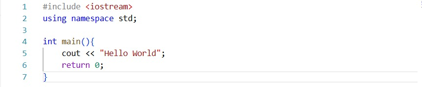
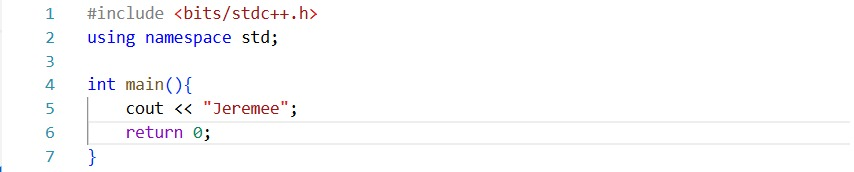
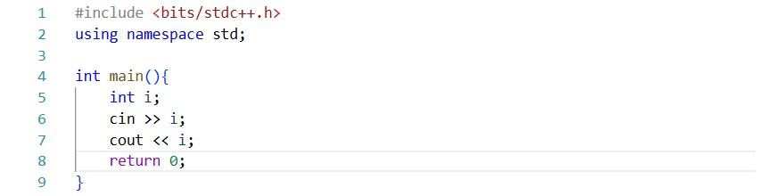
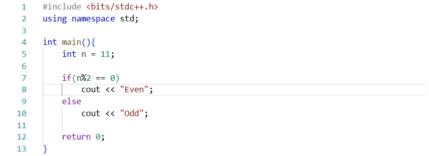
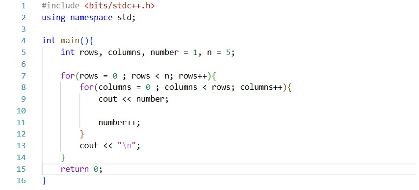
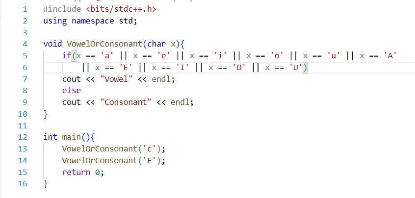

Coding Dalam PPT
Pengenalan CPP memberikan pengetahuan mengenai dasar dari bahasa pemrograman c++. untuk mendukung hal tersebut, maka sebagai mahasiswa harus mempelajari beberapa jenis pemrograman yang dasar.
HELLO WORLD
Untuk memulai segalanya, setiap bahasa pemrograman mempunyai standard outputnya tersendiri, dalam C++, output tersebut dituliskan dengan sintaks cout <<

Output : Hello World
Name
Menggantikan hasil output dengan kalimat lain, dalam hal ini adalah menggunakan nama

Output : Jeremee
Cara lain?
Selain cout <<, ternyata c++ memiliki cara untuk memberikan output dengan cara puts("kalimat").

Output : Jeremee
Cin Sebagai Input
Setelah mempelajari cout <<, kita juga harus mengerti cara memasukkan input, cin lah jawabannya, dengan menggunakan cin, kita bisa memasukkan input ke dalam sebuah variabel.

Input : 10
Output : 10
Even or Odd
Salah satu cara untuk mempelajari if else function, dalam hal ini even dan odd bisa dicek dengan cara modulo.

Output : Odd
Pattern
Selain if, kita juga mempelajari looping yang salah satu cara untuk melatihnya adalah dengan membuat suatu pola, pola yang dibuat dengan looping.

Output :
- 1
- 2 3
- 4 5 6
- 7 8 9 10
- 11 12 13 14 15
Char
Dengan menggabungkan beberapa pengetahuan sebelumnya, kita bisa mendetect menggunakan if else, namun dengan tipe data yang berbeda. Kali ini dengan menggunakan char, selain itu kita buat juga fungsi di luar main function.

Output :
Consonant
Vowel